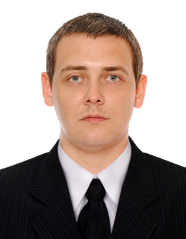

Окончил ДонУЭП в 2012 году по специальности—«Экономика предприятия» Сейчас готовлюсь к поступлению на второе высшее—на ИТ-специальность. Есть опыт разработки на 1С. Потихоньку разбираюсь в PHP. По моим ощущениям, работа программиста требует следующих качеств: достаточно высокой организованности, большого объема внимания, скорости восприятия новой информации и хорошо развитого логического мышления.
Хочу учить фронтенд, потому что:
Мой контактный телефон:
0953590460
Мой профиль в контакте:
vk.com
Мой фидбэк:
Могу предложить услуги 1с-разработчика.